Greece
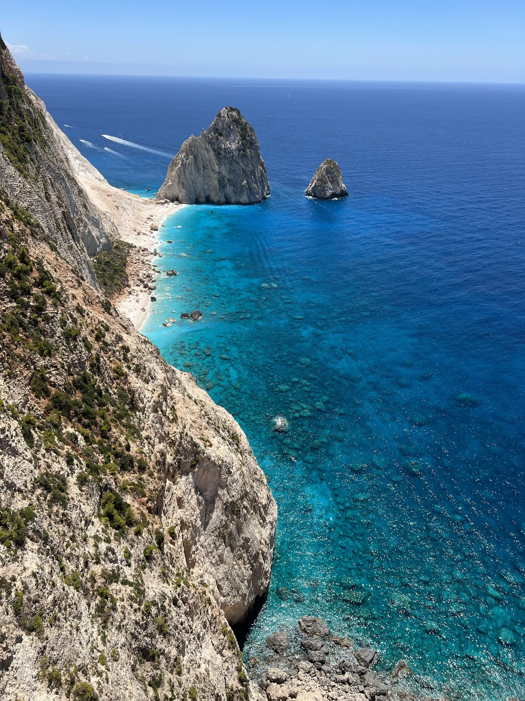
Zakynthos |
Greece was one of my favorite travel spots. I visited the island of Zakynthos and immediately felt welcomed. The community was incredibly polite and hospitable. The island itself was unbelievably stunning, where the water was crystal clear and reflected the prettiest ocean blue that I have ever seen. Two things I recommend when you plan on visiting Greece are trying out their national dish Gyros and visiting the shipwreck coast. |
Italy
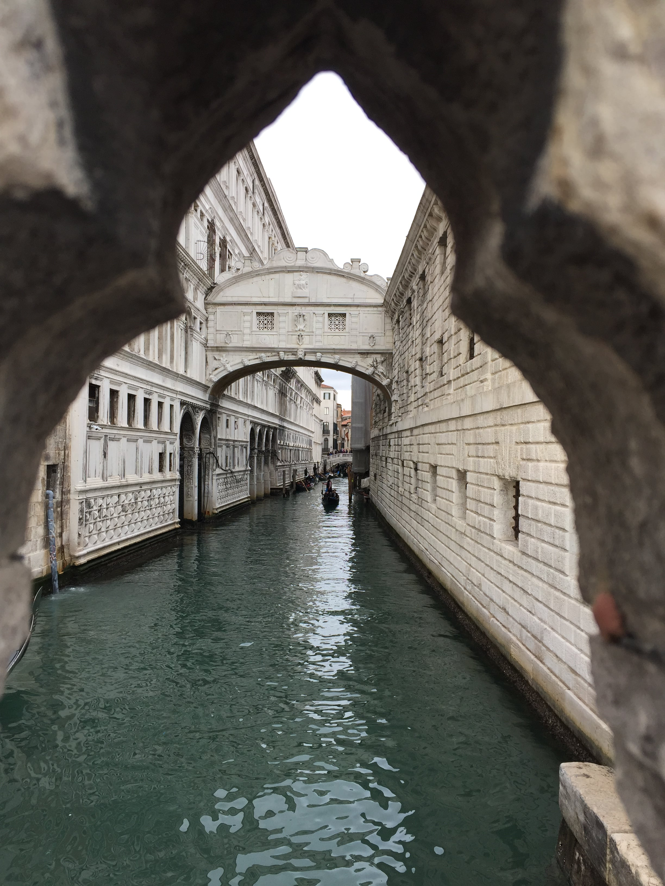
Venice |
Italy has so many locations that are worth visiting. I have been to Milan, Rome, Amalfi, Sorrento, Capri, Lake Garda, Portofino, and Venice. Given Venice's history and current state, it is my top choice out of the locations. Every corner was a work of art and had such distinct beauty. Since it is a relatively small city, it is very easy to walk to most of the locations, and you don't really need to worry about transportation. |
Switzerland
Schilthorn |
My sister and I stayed in Lauterbrunnen, Switzerland. We were surrounded with beautiful views of nature and the alps. It is definitely worth it to take the funicular up to the mountains, which gives you a great view of the entire terrain. A fun fact is that the movie James Bond was filmed in the exact location of the picture. I would recommend bringing some instant food items, as Switzerland is notoriously expensive. |
Austria
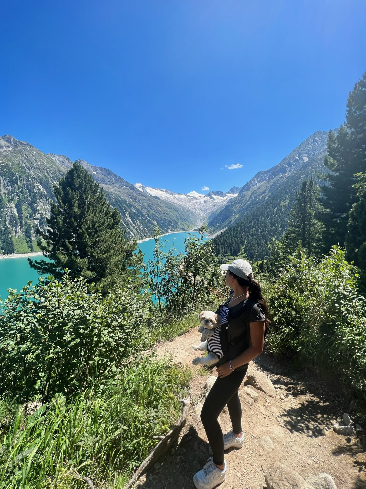
Finkenberg |
Austria is a great place to go for hikes. The fresh air and views of nature are worthwhile. You even get sources of fresh water to drink from. The hike is rather long, but once you have reached the top, you can enjoy a great meal at a restaurant that offers traditional food, such as Schnitzel. However, my favorite place in Austria is Vienna. The entire city was so beautiful and idyllic. If I had to describe the atmosphere, I would compare it similarly to the show "Bridgerton". You definitely have to try their culinary specialty, Sachertorte, if you enjoy desserts and chocolate! |
Croatia
Dubrovnik |
Croatia was a part of our destination while doing a family Europe trip. It is truly a privilege to have the opportunity to travel around some European countries so easily. Croatia's nature was stunning. If you plan on traveling around Europe, I would definitely recommend making a stop in Croatia. By car or train, both will give you incredible views of the country. However, I do have to mention that European roads can become very tight and tough to drive in. As long as you don't put people like me in the driver's seat for those kind of roads, it will be a fun adventure:) |
Czechia
John Lennon Wall |
Czechia was also our family's Europe trip destination. There was definitely a lot to see, but my favorite spot was the John Lennon Wall. The art and colors that were put onto that wall were mesmerizing. You immediately notice how everyone is in awe of the art and symbolic meaning of the wall. My favorite food in Czechia was their Trdelnik. It is a pastry that can be combined with various sweet components. It is my favorite dessert until this day! |
Poland
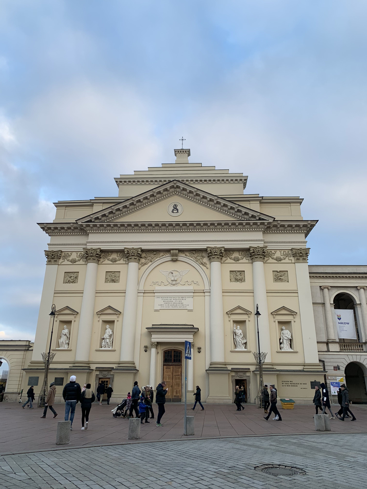
Warsaw |
Thanks to my friends, I was introduced to Polish culture very early on. Their families would always treat me very kindly and educate me about their culture and food. I traveled to Poland during the winter time, which I would only recommend if you like the cold. Words can not describe how cold it was during my stay there, where even three layers of clothes weren't enough! However, I mainly did indoor activities that educated me on the country's history, specifically about WW2. I can only encourage and recommend visiting a museum about it if you plan on visiting Poland. My favorite national dish is Bigos and Pierogi. |
Vietnam
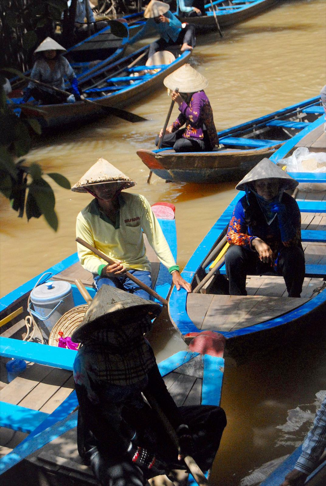
Mekong Delta |
Vietnam is my number one favorite travel spot. Being half Vietnamese, connecting to and learning about my culture was truly an amazing experience. I was able to visit my grandfather and explore the city with him and my family. I felt very welcomed and was in awe of the beauty of the entire country. I visited other locations, such as Da Nang and Mui Ne. Even though I can speak Vietnamese fluently, it was definitely a struggle for me to converse and communicate during my stay, given the different dialects that are present. I truly enjoyed my stay, however, and learned many new things. Culture is very important to me, and I would like to continue that. I hope to someday travel to Vietnam again and visit other beautiful locations such as Ha Long Bay and the Golden Bridge. |
CambodiaAngkor Wat |
My family and I made a short trip to Cambodia during our stay in Vietnam. It was definitely an experience that I will never forget. We took the bus to travel from Vietnam to Cambodia. The roads were bumpy, and all the dust from the roads got inside the bus, as the AC was defective. But I loved every minute of the experience and the memories I made from this trip. We visited the Angkor Wat temple, and I was genuinely appreciative, of being able to witness a monument that has so much history and culture to it. |
France
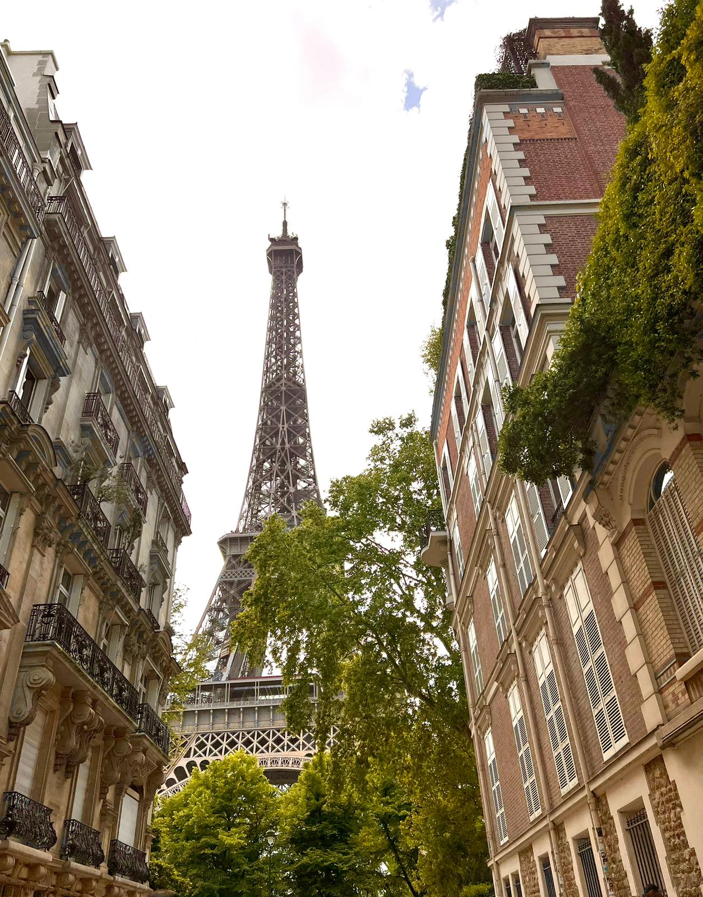
Paris |
France definitely lives up to its name when it comes to beauty and style. If you love sweets and pastries, this location is definitely made for you. There are so many other places in France that are truly beautiful besides Paris, as it has a more romantic setting than an adventurous environment. |
England
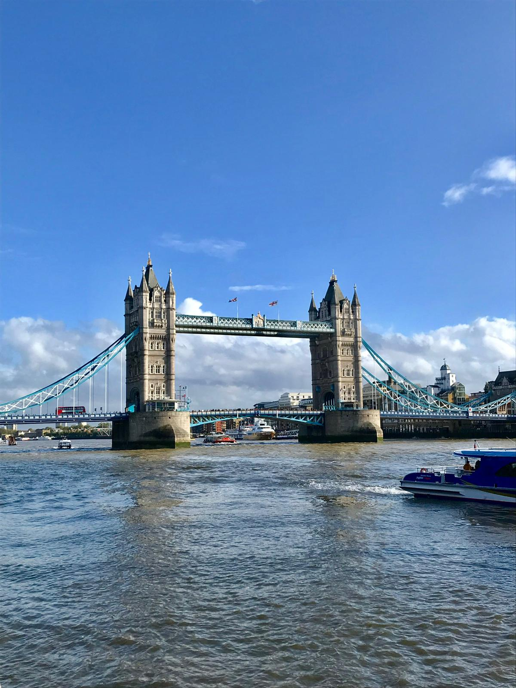
London |
England is a big country, and there is a lot to see. London is a lively city with many fun places to check out. You can feel the royal atmosphere and its importance to its residents. I would also recommend visiting other locations such as Canterbury. It is truly an experience to see the castles and their history behind them. |
Mexico
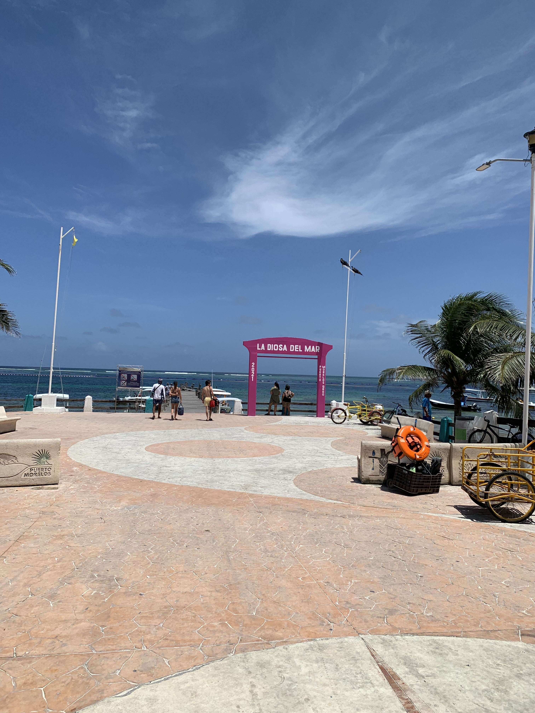
Cancun |
I enjoyed my stay in Cancun, Mexico. I went with a few friends and stayed at a resort close to the beach. Cancun is definitely a place where you can do a lot of different activities. My favorite part was snorkeling in the ocean. Snorkeling is such a beautiful experience and I could do it for hours, just lying in the water and being mesmerized by the reefs and fishes around you. |
Canada
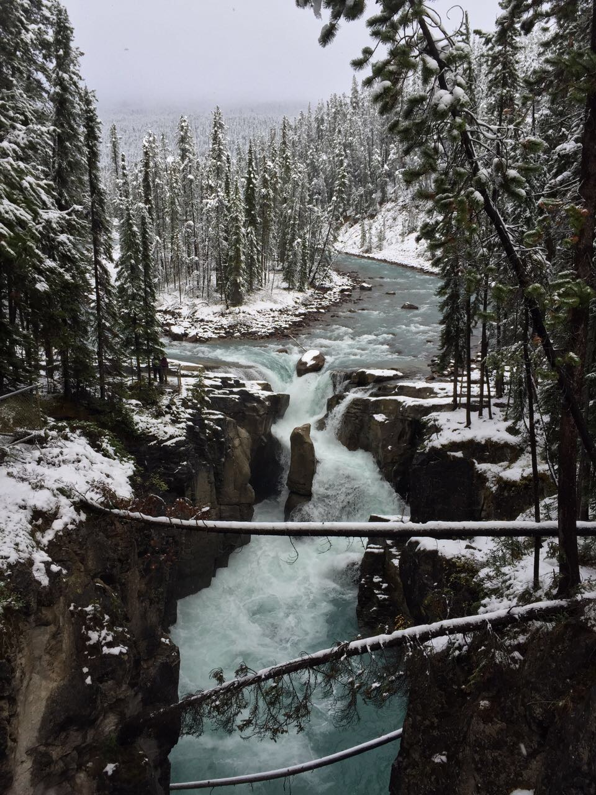
Banff |
Canada is also on my list of favorite places I have traveled to. It is a country I want to travel to again and explore more of, as Canada is huge. My family and I traveled to Canada from our stay in Seattle, and I enjoyed the combination of those two locations. Everyone was very kind and friendly. Banff was also a great location to hike, especially if you enjoy the snow. |
Australia
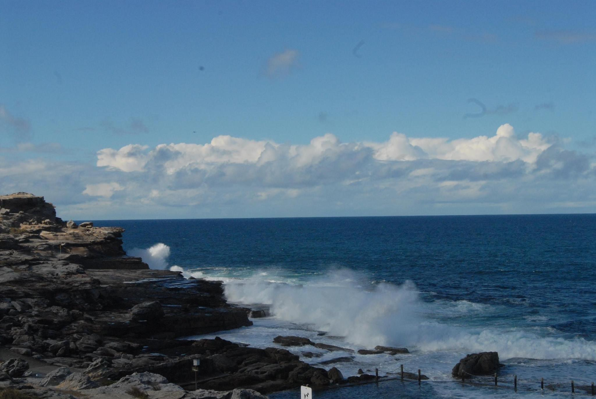
Bondi Beach |
I traveled to Sydney and Canberra during my stay in Australia. I felt like everything was straight out of a movie. Seeing the Sydney Opera House was a dream come true. I traveled during the summertime, which means it is wintertime in Australia! I should have accounted for that, but it was at least a lesson to check the seasons beforehand. Also, a fun story was that a bird stole my lunch straight from the plate without me even having the chance to touch it, LOL. |
Netherlands
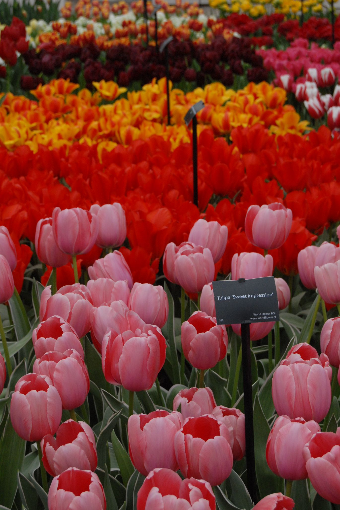
Flevoland |
The Netherlands is worth a stop when traveling through Europe. The tulip fields are gorgeous during the spring (unless you have spring allergies;)). Amsterdam is also exciting to visit. I would say 1-2 days in each location will be enough to see almost everything. |
Belgium
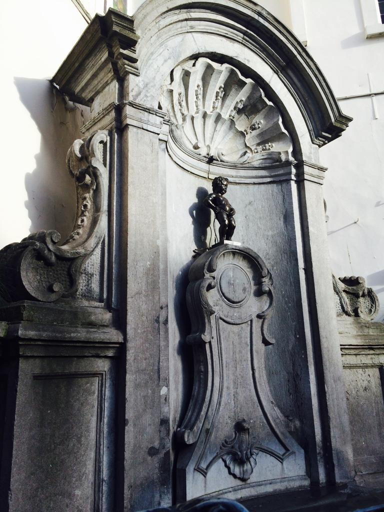
Brussels |
I visited Belgium, as my family and I attended a wedding there. Since I was a bit younger when we traveled to Belgium, I don't remember much from the sightseeing aspect, but I remember that the waffle and fries were delicious. So definitely go for the food there! |
Germany
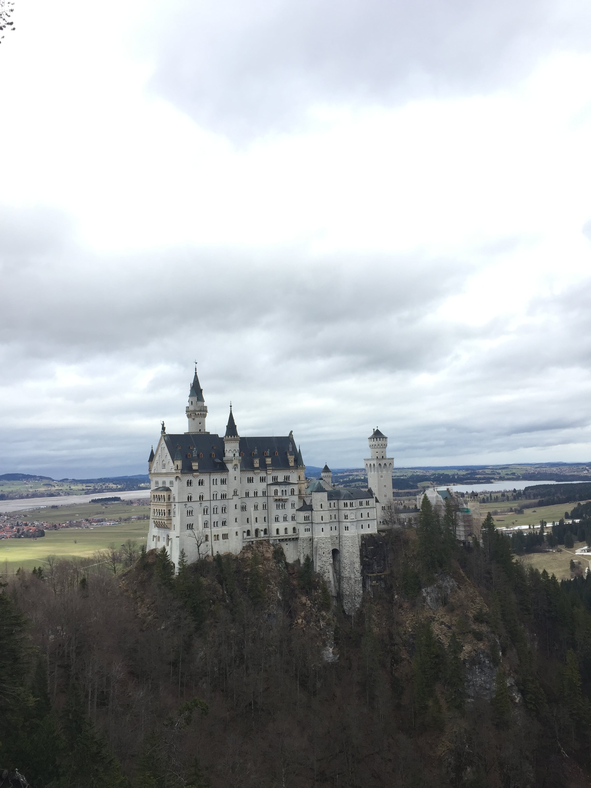
Schloss Neuschwanstein |
Even though Germany is my hometown, I still get mesmerized by its beauty every time. I grew up in a small town in Bavaria, and lived right next to a big forest. You are truly surrounded by nature everywhere, and there is so much to explore. I love to take the train and travel to any city in Germany. My favorite time of the year, is when the Christmas markets start. It is an experience that I truly want everyone to have, that enjoys the winter and Christmas time. The combination of the decoration, food, and atmosphere excites me for Christmas every year. |
USAAntelope Canyon |
Growing up, we always traveled to California, as most of my extended family lived there. A fun fact is that when I was in elementary school, I was interviewed for the local newspaper and was asked where I see myself in the future. I answered that I would be living in the United States. Almost 20 years later, that wish has come true. I am truly excited about my new chapter here. I was able to travel to a few cities and states in the U.S., but I hope that I can explore more in the near future. |